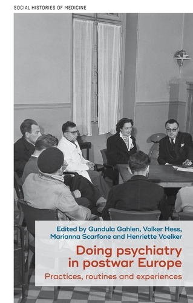

This collective volume looks at European psychiatry in the second half of the twentieth century through a variety of practices that were experienced and routinised in the mental health field after World War II. Case studies from across Europe allow one to appreciate how new ‘ways of doing’ contributed to transform the field, beyond the watchwords of deinstitutionalisation, the introduction of neuroleptics, centrality of patients, humanisation of spaces and overcoming of asylum-era habits. Through a variety of sources and often adopting a small-scale perspective, the chapters closely examine the way new practices took shape and how they installed themselves, eventually facing resistance, injecting new purposes and contributing to enlarging psychiatry’s fields of expertise, therefore blurring its once-more-defined boundaries. The book has four sections: visions, experimentation, reflections and crossing boundaries. The first focuses on experiences that were viewed, lived and narrated by the protagonists as unique and utopian. This character of novelty is also questioned through the patient’s perspective. The following section focuses on some cases whose protagonists were aware that they were trialling new ways of doing. Although these did not necessarily become mainstream, new frameworks of therapeutic intervention were shaped, and feebler protocolar procedures and eclectic appropriations were allowed for. The third section shows how the actors were called to reflect on practices and give them meaning, adopting a reflective habit that questioned the very role of each protagonist of the therapeutic scene. The last section analyses how psychiatry entered fields of expertise other than those usually assumed.
